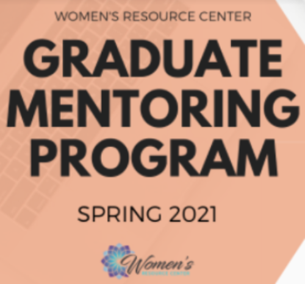
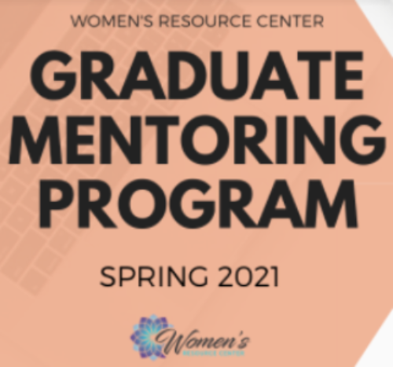

Danielle Evangelista
Undergraduate Biology major at UC Riverside Class of 2021
In September 2017, I attended the University of California, Riverside as an undergraduate freshman with a declared biology major in a bachelor’s in science. Throughout my undergraduate years, I was fortunate enough to spend three and a half years experiencing campus life prior to the COVID-19 pandemic. As a resident from Northern California, I was able to live independently away from home and experience both the dorm life as a freshman and the off-campus apartment life with roommates I am still close with.
Initially, I was never truly sure of what I wanted to do with my biology degree after I graduate with my bachelor’s at UCR. Biology is such a broad subject that covers a wide range of disciplines, so I was amazed at some students who knew exactly what they wanted to do with their lives in terms of career planning. Luckily, I wasn’t alone, and I was also surrounded by peers who had an idea of what life would be like after college, but they never had a plan set in stone. The idea of planning a future immediately after college sounded anxiety-inducing at first, but thankfully I had an amazing support system (parents, friends, classmates, faculty staff) who constantly give me advice on what I should do.
As I reflect on my years spent in UCR, I realize just how much I highly enjoyed both my lower division and upper division biology courses. Whether or not they were required to complete my degree audit, I always loved learning about such a wide range of topics that can stem from biology, chemistry, physics, biochemistry, pharmacology, microbiology, and so on. At least with my lower division courses, I had the opportunity to be exposed to an academic laboratory setting where I could apply the material that I learned from my lectures and actively participate in several experiments that were facilitated by graduate teaching assistants.
That being said, I realize that I can do so much with my biology degree after being exposed to so many different fields of biology. As of now, my current plan is to pursue an additional bachelor’s degree in nursing, in which I can fully expose myself to a healthcare setting. And then, if I choose to do so, I also have the option of pursuing a higher degree (i.e. master’s program or PhD program) in a specific discipline. Since UCR does not have a nursing program, I am choosing to finish any additional prerequisites at a community college before I begin the application process. If possible, I would like the opportunity to gain experience in a hospital or clinical setting. Other opportunities that I am also interested in include lab internship and/or research lab assistant positions. I would like to apply the knowledge I gained from my undergraduate studies into a more professional, career-oriented setting.
Though no plan is ever truly finalized, I am much more optimistic about this path I am taking to achieving my goals. I will be graduating from UCR in June 2021, and I am looking forward to enhancing my personal and professional skills in the real world.
Experience
Student Volunteer
• Collected and sorted donated books, non-perishable food, and clothing in workshops
• Lessen hunger and poverty in local community
Undergraduate Intern
• STEM internship program for students interested in industry
• Research projects with experts in a variety of STEM fields
Undergraduate Student Mentee
• Paired with TAs/graduate students to seek mentoring in professional and/or graduate program decisions
• Discussed application process, alternative plans for programs
Education
UC Riverside
Acalanes High School
Portfolio

.png)

